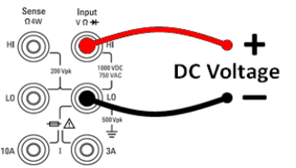
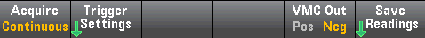
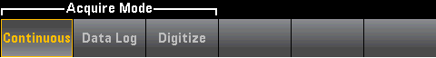
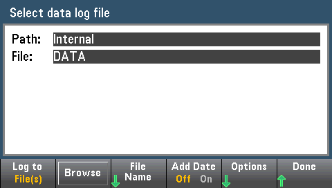
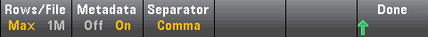
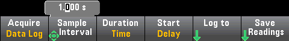
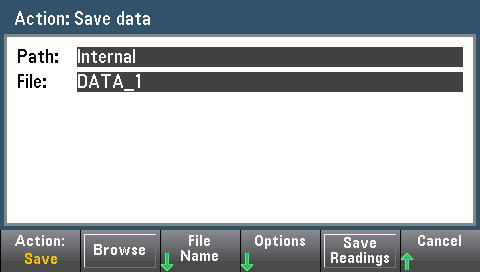

Data Logging
The Data Log mode is standard on the 34465A and 34470A only, as is available only from the DMM's front panel. Data Log mode provides a front–panel user interface that allows you to set up data logging into the instrument’s non–volatile memory, or to internal/external file(s), without programming, and without a connection to a computer. Once you have finished collecting data, you can view it from the front panel, or you can transfer the data to your computer. Data Log mode allows you to log a specified number of readings, or readings acquired for a specified period of time, to instrument memory or to internal or external data files.
To select Data Log mode, press [Acquire] Acquire > Data Log. You can then select the Sample Interval (time between measurements - for example, 500 mS), Duration as either an amount of Time or a number of Readings, whether to Start after a Delay or at a specific Time of Day, and whether to Log to Memory or Log to File(s). After configuring the data logging parameters, press [Run/Stop]. Data logging will begin following the specified Delay or at the specified Time of Day.
Data Log mode can be used with the DC voltage, DC current, AC voltage, AC current, 2-wire and 4-wire resistance, frequency, period, temperature, capacitance, and ratio measurement functions (diode and continuity are excluded). The maximum reading rate is 1000 readings/s and the maximum duration is 100 hours resulting in a maximum number of readings of 360,000,000 to file. The number of readings you can log to memory depends on the amount of instrument memory. With the MEM option, the limit is 2,000,000 readings; without the MEM option, the limit is 50,000 readings. By default, data logging implements auto trigger. The level and external trigger sources are not supported for data logging.

Loss of data possible - local to remote transition clears instrument memory: When data logging or digitizing to memory, if you access the instrument from remote (send a SCPI or common command)* and then return to local (by pressing [Local]), the readings in memory are cleared and the instrument returns to Continuous mode.
For data logging only, you can prevent this situation by data logging to a file instead of to memory (see Data Log Mode for details). You can also prevent this from happening for data logging or digitizing by taking steps to keep the instrument from being accessed from remote. To prevent remote access, you may want to disconnect the LAN, GPIB, and USB interface cables from the instrument before starting the measurements. To prevent remote access via LAN, you can connect the instrument behind a router to minimize the possibility of remote access. You can also disable the various I/O interfaces from the front panel menus under [Utility] > I/O Config.
To view the status of a data logging or digitizing operation remotely, use the instrument’s Web User Interface. The Web User Interface monitor does not set the instrument to remote.
*When accessed from remote, the instrument will continue data logging or digitizing to completion, and you can retrieve the readings from remote.
Data Logging Overview
This section is a summary of the steps involved in setting up data logging. Detailed steps are described below in Detailed Data Logging Steps.
- Select the measurement function and make connections to the DUT (see Measurements for details).
- Select Data Log mode (press [Acquire] > Acquire > Data Log).
- Specify the sample interval (time between readings) for example, 20 mS.
- Specify the duration as amount of time or number of readings.
- Specify when to start data logging (delay or time of day). You can only use auto trigger (default) or single trigger (press [Single])for data logging.
- Select whether to log data to memory or internal or external data file(s).
- Press [Run/Stop] or [Single]. Data logging starts when the specified delay has elapsed or the time of day occurs (specified in Step 5). Data logging will stop after the specified duration (time or number of readings) has occurred or after you press [Run/Stop] again.
Detailed Data Logging Steps
Note: For more information, on any of the softkeys described below, such as the range of values for a particular setting, press and hold the softkey to display help for that softkey.
Step 1: Select the measurement function and make connections to the DUT (see Measurements for details). For example, press DCV and configure the test leads as shown.

Step 2: Press [Acquire] on the front panel to display these softkeys:

Press the Acquire softkey.

Press the Data Log softkey. The Data Log menu opens:

Step 3: Press Sample Interval and specify the time interval between samples (readings).
Note: You may see this message when configuring data logging: Sample interval is limited by measurement settings. The measurement time is determined by the measurement function, NPLC, Aperture, Autorange, Autozero, Offset Compensation, AC Filter, TC Open Check, and Gate Time. The data logging Sample Interval cannot be less than the measurement time. You can shorten the measurement time by selecting less integration time, selecting a fixed range, and so on.

Step 4: Press the Duration softkey to specify the length of time to log data, or, press Duration again to specify the total number of readings to log.
Step 5: Press Start to specify when to start data logging. You can select:
- Start Delay - Starts data logging after a specified time delay. Specified in HH.MM.SS format.
- Start Time of Day - Starts data logging at a specified time of day. Specified in HH.MM.SS format. Using the time of day requires that the instrument’s real-time clock is properly set. To set the clock, press [Shift] > [Utility] > System Setup > Date/Time.

 You cannot configure a trigger source when data logging. You can only use auto trigger (selected by default) or, when ready to initiate data logging, you can cause a single trigger (by pressing [Single]). The effect is the same, as you only need one auto trigger or single trigger event to enable data logging.
You cannot configure a trigger source when data logging. You can only use auto trigger (selected by default) or, when ready to initiate data logging, you can cause a single trigger (by pressing [Single]). The effect is the same, as you only need one auto trigger or single trigger event to enable data logging.
Step 6: Press Log To > Log To Memory or Log To Files to specify whether the data logging results will be stored in volatile memory for display or written to one or more internal/external files.
- When data logging to memory, the data is volatile (not remaining during power off) but can be saved to an internal or external file after data logging is complete (see Step 7 below). The number of readings you can store in memory depends on the amount of instrument memory. With the MEM option, the limit is 2,000,000 readings. Without the MEM option, the limit is 50,000 readings.
- When data logging to file(s), Browse to an internal or external path and specify a File Name. If more than one file needs to be created to hold the data, the second file name will be appended with _00001, the third file name with _00002, and so on. When data logging to files, the maximum number of readings is 360,000,000.

When Add Date is On, the data logging start date and time is appended to the file name using the format:
_YYYYMMDD_HHMMSS
For example, for a file named Data 1, the result will be similar to: Data 1_20140720_032542.
Press Options to to configure reading storage options:

Rows/File - Specifies the maximum number of rows or readings to be written to a file. For Max, the limit is the number of bytes allowed by the file system (232 = 4.294967296 GBytes). This represents approximately 252 M readings with Metadata Off, or 159 M readings with Metadata On. For 1M, the limit is 1,000,000 rows in the resulting file. This allows you to accommodate common spreadsheet, database and data analysis programs that have limitations of 1 million rows per file.
Metadata - Enables reading number, time stamp of first reading, and sample interval (if available) in the file.
Separator - Specifies the character (Comma, Tab, or Semicolon) to use for separating the information on each row.
When finished configuring reading storage, press Done > Done to return to the main data logging menu.
Step 7: Press [Run/Stop] or [Single]. Data logging starts when the specified delay has elapsed or the time of day occurs (specified in Step 5). Data logging will stop after the specified duration (time or number of readings) has occurred or after you press [Run/Stop] again.
When data logging is complete:
- When data logging to file(s), the instrument saves the file(s) with the specified name and path.
- When data logging to memory, you can now save the readings from the main data log menu by pressing Save Readings.

You can then Browse to an internal or external path and specify a File Name. You can also specify reading storage Options as described above in Step 6.

Trend Chart for Data Logging
The Trend Chart is particularly useful for viewing data logging measurements. See Trend Chart (Digitize and Data Log Modes) for details.